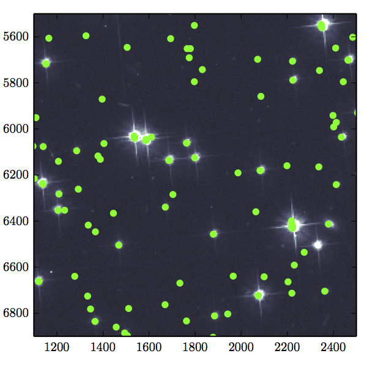
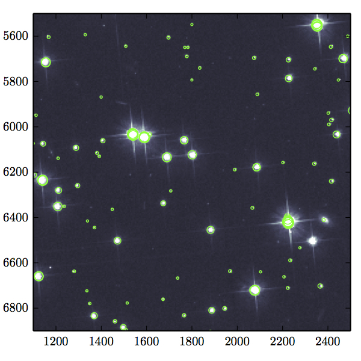

How to Overplot Coordinates on a FITS Image
Also viewable as an
iPython notebook.
What we need:
from astropy.io import fits
import numpy as np
from matplotlib import pyplot as plt
Now we get the .fits file we want to work with:
image = fits.open('f606w_cts.fits')
data = image[0].data
image.close()
Then the coordinates:
f = open('f606w.phot')
coords = np.genfromtxt(f)
f.close()
xc = []
yc = []
mag = []
for i in coords:
if i[2] > 0:
xc.append(i[0])
yc.append(i[1])
mag.append(i[2])
And the plot:
fig = plt.figure()
ax = fig.add_subplot(111)
plt.set_cmap('bone')
ax.scatter(xc, yc, color='#00ff00')
ax.imshow(data, vmin=0, vmax=1000)
ax.set_xlim(1100,2500)
ax.set_ylim(6900,5500)
fig.tight_layout()

Now we scale the marker size to the magnitude of stars:
mag_scaled = np.mean(mag)/mag
aperture = 20**(mag_scaled**4)
fig = plt.figure()
ax = fig.add_subplot(111)
plt.set_cmap('bone')
ax.scatter(xc, yc, color='#00ff00', s=aperture, facecolors='none', linewidth=0.7)
ax.imshow(data, vmin=0, vmax=1000)
ax.set_xlim(1100,2500)
ax.set_ylim(6900,5500)
fig.tight_layout()
